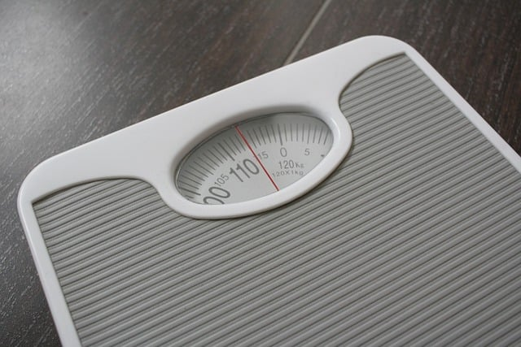

다이어트
왜 살이 찌고 비만이 되고 사람마다 살 찌는 속도와 민감성이 다른지,
또 예방법과 해결방법 등이 뭔지 상세하게 규명이 끝난 과학적 사실들이 많고
또 심지어 위고비 마운자로로 상업적 증명까지 끝난 동네인데.
유독 다이어트 관련해서는
"그냥 덜 먹으면 되는거 아님? 그게 왜 안됨? 의지력 ㅉㅉ"
"호르몬 얘기하는 의지박약충"
하면서 과학이랑 기싸움하는 의지력 광신도들이 나타남;

다이어트
왜 살이 찌고 비만이 되고 사람마다 살 찌는 속도와 민감성이 다른지,
또 예방법과 해결방법 등이 뭔지 상세하게 규명이 끝난 과학적 사실들이 많고
또 심지어 위고비 마운자로로 상업적 증명까지 끝난 동네인데.
유독 다이어트 관련해서는
"그냥 덜 먹으면 되는거 아님? 그게 왜 안됨? 의지력 ㅉㅉ"
"호르몬 얘기하는 의지박약충"
하면서 과학이랑 기싸움하는 의지력 광신도들이 나타남;
여기 댓글만 봐도 한국 자살률이 전세계 탑급인 이유가 바로 보임
난ㅋㅋ
그냥 안먹는게 힘듦, 먹어야해ㅋㅋ
세상에 완벽한 사람이 어딨음
다 머리로는 알지만 실천하지 못하는 거지
새삼 커뮤에 돼지들 많다는 걸 느낀다
또 기싸움..
다이어트 개 씨발롬이 개 빡치는 이유는 운동만으로는 빠지지 않는 다는 거임
근돼는 근육량 유지하면서 살 빼는게 불가능한게 좆같음
살은 식이조절로 빼는거지
운동은 근육을 활성화 시키는 역할인거고
기초대사량 어쩌고도 전혀 낭설은 아니겠지만 사실 먹는거 조절하는거 만큼 효과좋은 다이어트도 없지
진짜 가끔 쯔양이나 히밥 같은 특이종이 나오긴 하지만...
과학적으로 덜먹으면 안찌는게 맞지
니코틴 중독에 취약한 유전자는 다 꼴초가 되게?
돼지들은 뭐 무에서 유를 창조함? 살찌기 좋은거를 많이 먹으니까 찌는거지 매끼니 야채채소 위주로 먹어도 찌겠냐 배민 끄고 닭가슴살 양배추에 볶아먹으면 안 찌잖아
예전에 개드립에 올라왔던 다큐에서도 물만먹어도 살찐다는 여자 나와서 하루종일 먹더만
금연하는법 - 담배를 피지 않는다
살빼고끝이아니라 살을뺐으면 그 빼던습관을 평생가지고 가야해서 힘든거같음
식단이든 운동이든 살 다뺐다고 다시 돼지 루틴으로 돌아가니까 돼지되는게 당연하지 90kg 에서 60kg 이됐으면 끝이아니라 60kg수준의 식습관과
운동을 평생 가져가야하는것
댓글 이렇게 많은거 첨봄ㅋ
계속 댓글에 돼지들이 지능 지능하는데... 지능 높고 공부잘하는사람중에 돼지 없음 ㅠ뇌 굴려서 생각하고 공부하는데 칼로리 소모가 너무 커서..돼지들이 지들 의지박약 긁히니까 자꾸 과학이니 지능 이니 운운하는데..전문직이나 고학벌 스타 강사들 중에 돼지있더냐? 까보면 꼴랑 지잡대 백수일 돼지들이 자꾸 지능거리니까 웃기네 ㅋㅋㅋ
마운자로로 핫한 장형우교수님은 서울대의대졸업해서 서울분당병원에서 심장의학으로 일하시는분인데 이분보다 더 고학력자신거죠?
어휴 돼지야... 그냥 적게먹고 운동해 남한테 자아의탁하지말고 짜치니까ㅋㅋㅋ 그래서 니 학벌은뭐냐고 ㅋㅋㅋ
님이 먼저 남학벌이야기 꺼내셨잖아여...ㅎ
님이 먼저 고학력자중에 두뇌를 자주써서 칼로리 소모가 많아서 돼지안된다고 했는데 분명..그래서 애초에 저걸 설명하시는분이 초고학력자의사시라고만 말했을 뿐인데 ㅎ
서울대의대 나오신분이 비만은 의지로 안된다고 하시는데 의학적 근거로..님은 무슨근거로 의지로 해결된다고 하시는건가요?
세계부자1위인 일론머스크조차도 위고비로 다이어트했는데 ㅜㅜ
그래 븅신아 너는 확실히 고학력자가 아니니까 니 논리 따라가면 초고도비만일듯
쌉소리 지랄을 해놨네. 안먹으면 빠진다 끝.
나도 다이어트 해본사람으로서 10키로 정도만 빼고 유지하고 있는데
평일에 조금 먹고, 주말에 걍 많이 먹어도 유지는 됨
예를들어 점심 회사밥 혹은 사먹기, 저녁 샐러드, 야식 안먹고, 간식 안먹기 -> 이걸 3일만 버텨도 그냥 적응돼서 계속 진행하게 됨
그렇다고 이게 쉽다는건 아님
물론 가끔 입터져서 폭식하게 되는데, 저녁 샐러드 말고 걍 칼로리 낮은 맛도리 먹으면 폭식하는 것도 좀 ㄱㅊ아짐
그리고 헬스하거나 운동하다보면 몸이 좋아지는게 느껴져서 자연스럽게 식단도 함께 하게 되더라고
본문처럼 여러 과학적으로 밝혀진 내용에 따르면 유전자, 호르몬 레벨에서 비만은 어쩔수 없는 거라고 하니까, 그렇구나 하고 넘어가긴함.
하지만 보통 돼지들은 식습관에 문제가 많은 경우가 있다고 느껴지는 게 큰거같음
예를들어 주변에 돼지 한명 있는데 식습관이 출근하고 탕비실, 점심먹고 아이스크림, 음료는 당분 높은거, 항상 밤에 야식(그것도 곱창, 마라탕 같은거) 이런식이고.
생활 습관도 계단 타는거 싫어해서 1층이라도 엘레베이터, 걸어서 15분거리 이상은 거의 택시. 밥먹은 후 안걷고 그냥 쉬기.
이런식이니까 돼지는 이유가 있구나 싶음
식습관 개선해봤는데도 살이 안빠진다 -> 이건 이해하겠는데
식습관 개선하지도 않고 과학탓하면서 변명 -> 이건 이해못함, 그냥 게으른거임
더 화나는건 위고비, 마운자로 나왔다고, 식습관 개선 의지를 놓는거임
돼지처럼 쳐먹고, 아 괜찮아 나중에 위고비 맞으면 돼~ -> 이런 소리 하면 개패고싶음
식습관 개선도 사실 대단한게 아니라, 간식 줄이기, 야식 안먹기, 당 적당히 먹기인데, 이것조차도 안하고
생활습관도 걷기, 밥먹고 조금이라도 움직이기, 이것조차도 안하니까
그냥 과학뒤에 숨은 변명으로 밖에 안보임
일단 문제가 고도비만은 10키로가 아님 대부분 30-40키로를 빼야함. 그걸 유지하려면 1년에 10키로씩 4년동안 빼고 그정도수준을 앞으로 평생 유지해야함.그래야 그나마 유지가능한 다이어트가 가능함.
그리고 애초에 40키로이상빼야하는 고도비만은 운동자체를 하기 어려운 몸인것도 큼
고도비만은 어쩔수 없는거긴 하지
친구중에도 30키로 뺀 애 있는데, 발목이 아파서 힘들었다고 하더라
식습관개선이 그리고 진짜 고도비만들한텐 불가능한거임.
머리속에서 계속 신호를 보냄. 평소에 먹는 자극이 안들어오면 그냥 계속 먹으라고먹으라고 신호를 계속 보냄.
그러면 3-4일은 어찌 의지로 참아도 한번 눈돌아가면
그냥 3-4일치를 다먹음. 근데 또 몸이 잔인한게 3-4일 덜 먹으면 이새끼 위급상황이구나 싶어서 또 전부 지방으로 처넣어버림.그러면 또 살이 더 찌고 존나 악순환인데
이걸 끊어주는게 위고비 마운자로
운동에 재미 붙힐려면 최소 90키로는 진입해야 재밌는데 고도비만들은 적어도 100키로는 기본이고 120 140 이러니까
그래서 피티붙혀서 운동하고 식단하면 옆에서 계속 코치해주고 하는데 피티도 뭐 평생 할 수 없는거고
요즘 피티 퀄리티도 존나 구리니까 그돈으로 그냥 마운자로 맞고 살뺀 후에 운동 배우는게 훨씬 이득인게 맞는거같음
먹는 칼로리가 하루 필요 열량보다 적어야 살이 빠지지. 열역학 제1법칙임
의지만으로 그만큼만 먹으면 비만인들은 호르몬과 뇌가 망가져서 일상생활이 불가능할정도로 예민해지고 스트레스 받는거임.마운자로위고비는 저걸 조절해주는거고
그래서 먹는스트레스가 확줄어드는거
스트레스 줄면 살은 또 더 잘빠지고
커뮤에선 공부도 수명 암 처걸리는것도 유전이라더니 또 체중은 의 지 박 약 때문이라네 ㅋㅋㅋㅋㅋㅋㅋ
그렇게 의지 강하신분들이 왜 공부는 그따구로 밖에 못하셨어요
그냥... 하루 세끼(07시/12시/18시)만 먹고 그외에 음료수 과자 간식 이런거 싹다 끊으면 살은 자동으로 빠짐
물론 한끼에 4끼 양을 쳐먹으면 안되겠지만
보통 식당에서 1인분파는 그정도만 먹으면 자연스레 정상체중 됨
그걸 못해서 살이찌는거임 특히 밥먹어서 혈당 높아져있는데 시럽이나 설탕들어간 커피나 음료수 때려넣는 건
자 이제부터 난 살이찔꺼야 라고 하는거랑 다를바가 없음
간식이 정 먹고 싶으면 칼로리 계산해서 하루 2000~2500(남자기준) 정도 먹는다 생각하고 거기에 맞는걸로
식후 3시간 식전 3시간 정도 시간에 먹으면 괜찮은데
시도때도 없이 초콜렉 주서먹고 사탕주서먹고 음료수 쳐먹고 믹스는 괜찮아하면서 커피 때려먹고
살이 안찌면 그게 이상한거지
뭐 쯔양이면 안찌겠지만...
맞음.누구나 아는사실임. 탄단지 건강하게 챙기고 운동하고 그러면 다 몸짱헬창되는거 가능하지.
근데 이방법은 비만이 되기전에 유효한 방법인거임.
막 대충 5-10키로 빼는정도면 의지로 가능하긴한데
보통 주사맞아야하는사람들은 최소가 20키로빼야함.
고도비만들은 40키로이상 빼야함.
이런사람들은 호르몬이 다망가져서 님이 말한대로 할려면 일반적인 의지로는 도저히 불가능하다라는거임.
이미 늦은거임ㅇㅇ.돌이킬수 없어.근데
주사를 맞으면 이런것들이 정상적으로 작동하면서
식사량이 자연스럽게 줄어들고 포만감이 뭔지를 알게됨.
설탕중독현상도 음식자체가 줄어드니 자연스럽게 줄어들고 그러다보면 자극적이고 단짠음식이 간이 쎄다고 느껴지고 그러다보면 살이 빠지고 살이빠지면 운동을 시작 할 수있는 몸이 되게 도와주는게 마운자로 위고비
걍 개드립 연령대가 늙어서 그럼
나이 많을수록 과학 안믿고 자기 고집을 맹신하는 사람 많아지더라
맞말인데 또 과학불신 노오오오오력충들 등판한거냐 댓글 왤케 많아ㅋ